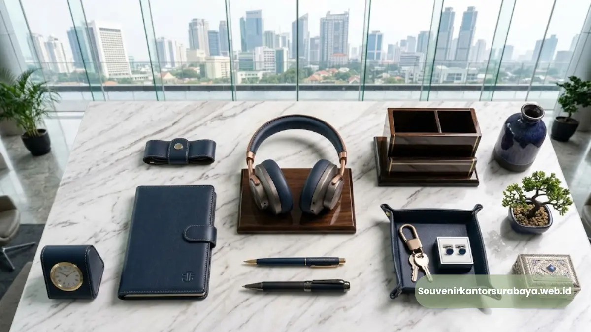

- Faktor Utama yang Memengaruhi Harga Dompet Kartu Nama Kulit
- Apakah Harga Custom Logo Lebih Mahal Dibanding Produk Polos?
- Bagaimana Jumlah Pesanan Memengaruhi Harga per Unit?
- Bagaimana Cara Menyesuaikan Harga dengan Anggaran Perusahaan?
- Apakah Ada Biaya Tambahan di Luar Harga Dasar Produk?
- Bagaimana Menentukan Anggaran yang Realistis untuk Souvenir Klien?
Harga dompet kartu nama kulit custom logo di Surabaya ditentukan oleh kombinasi jenis bahan kulit, teknik pencetakan logo, tingkat kerumitan desain, dan jumlah unit yang dipesan dalam satu kali produksi.
Semakin banyak variabel custom yang diminta, umumnya semakin besar pula pengaruhnya terhadap harga akhir per unit.
- Jenis bahan kulit menjadi faktor utama penentu harga dasar
- Teknik custom logo (emboss atau hot stamping) memengaruhi biaya tambahan
- Jumlah pemesanan memengaruhi efisiensi harga per unit
- Kemasan tambahan dapat menambah nilai sekaligus biaya produksi
- Konsultasikan kebutuhan anggaran Anda dengan souvenir kantor surabaya untuk penawaran yang sesuai
Faktor Utama yang Memengaruhi Harga Dompet Kartu Nama Kulit Custom
Faktor utama yang memengaruhi harga dompet kartu nama kulit custom adalah jenis bahan, metode personalisasi logo, kompleksitas desain, serta volume pemesanan dalam satu batch produksi.
Jenis bahan menjadi variabel paling mendasar. Kulit asli umumnya membutuhkan proses pengolahan bahan baku yang lebih panjang dibanding kulit sintetis premium, sehingga turut memengaruhi struktur harga dasarnya.
Di sisi lain, kulit sintetis premium menawarkan tampilan rapi dengan harga yang cenderung lebih terjangkau untuk kebutuhan pemesanan dalam skala besar.
Metode personalisasi logo juga berperan penting. Teknik emboss polos, yang hanya mencetak logo secara timbul tanpa tambahan warna, umumnya membutuhkan proses produksi lebih sederhana dibanding hot stamping dengan warna emas atau silver yang memerlukan material foil tambahan.

Apakah Harga Custom Logo Lebih Mahal Dibanding Produk Polos?
Ya, produk dengan custom logo umumnya memiliki biaya tambahan dibanding produk polos, karena proses cetak logo membutuhkan tahapan produksi dan alat khusus di luar proses pembuatan dompet itu sendiri.
Biaya tambahan ini biasanya mencakup pembuatan cetakan atau plat logo, waktu proses tambahan pada tahap finishing, serta material pendukung seperti foil warna untuk teknik hot stamping.
Meski demikian, biaya cetakan logo umumnya bersifat satu kali di awal produksi, sehingga semakin banyak unit yang diproduksi dalam batch yang sama, biaya cetakan tersebut akan terbagi secara lebih efisien ke setiap unitnya.
Bagi perusahaan yang menginginkan tampilan premium namun tetap efisien dari sisi anggaran, teknik emboss polos tanpa warna tambahan sering menjadi pilihan yang seimbang antara kesan eksklusif dan efisiensi biaya produksi.
Bagaimana Jumlah Pesanan Memengaruhi Harga per Unit?
Jumlah pesanan berpengaruh signifikan terhadap harga per unit karena biaya setup produksi, termasuk pembuatan cetakan logo, dapat dibagi ke lebih banyak barang saat volume pemesanan lebih besar.
Pada pemesanan dalam jumlah kecil, biaya setup awal seperti pembuatan cetakan logo tetap harus dikeluarkan meski hanya untuk beberapa unit, sehingga porsi biaya tersebut per unit relatif lebih tinggi.
Sebaliknya, pada pemesanan dalam jumlah besar, biaya yang sama terbagi ke lebih banyak produk sehingga harga per unit cenderung lebih efisien.
Bagi perusahaan yang merencanakan pengadaan souvenir untuk banyak klien sekaligus, misalnya untuk acara gathering tahunan atau seminar korporat, mengonsolidasikan kebutuhan dalam satu kali pemesanan besar umumnya lebih menguntungkan dari sisi anggaran dibanding memesan secara bertahap dalam jumlah kecil.
Bagaimana Cara Menyesuaikan Harga dengan Anggaran Perusahaan?
Cara paling efektif menyesuaikan harga dengan anggaran perusahaan adalah dengan menentukan prioritas antara jenis bahan, teknik custom, dan jumlah unit sejak awal perencanaan, kemudian mengonsultasikannya langsung untuk mendapatkan estimasi yang sesuai.
Perusahaan dapat memulai dengan menetapkan anggaran total, lalu menyesuaikan kombinasi bahan dan teknik custom logo agar sesuai dengan batas tersebut.
Misalnya, jika anggaran terbatas namun jumlah penerima cukup banyak, kulit sintetis premium dengan teknik emboss polos bisa menjadi pilihan yang tetap terlihat profesional tanpa melebihi anggaran.
Sebaliknya, jika souvenir ditujukan untuk klien di level eksekutif dalam jumlah terbatas, mengalokasikan anggaran lebih besar untuk kulit asli dengan hot stamping warna dapat memberikan kesan yang lebih eksklusif dan sepadan dengan pentingnya relasi bisnis tersebut.
Apakah Ada Biaya Tambahan di Luar Harga Dasar Produk?
Selain harga dasar produk, biaya tambahan yang umum muncul dalam pemesanan dompet kartu nama kulit custom meliputi biaya cetakan logo, kemasan eksklusif, dan opsi pengiriman untuk kebutuhan volume besar.
Biaya cetakan logo biasanya bersifat satu kali di awal produksi dan tidak berulang selama desain logo tidak berubah pada pemesanan berikutnya.
Kemasan eksklusif, seperti box khusus dengan warna dan logo perusahaan, dapat menambah kesan premium saat souvenir diserahkan kepada klien, meski turut menambah komponen biaya secara keseluruhan.
Untuk pemesanan dalam volume besar, beberapa perusahaan juga mempertimbangkan biaya pengiriman ke berbagai lokasi jika souvenir perlu didistribusikan langsung ke masing-masing klien, bukan hanya dikumpulkan di satu titik pengambilan.
Merinci seluruh komponen biaya ini sejak awal konsultasi membantu perusahaan menyusun anggaran total secara lebih akurat, tanpa ada biaya tersembunyi yang muncul belakangan.
Bagaimana Menentukan Anggaran yang Realistis untuk Souvenir Klien?
Menentukan anggaran yang realistis untuk souvenir klien sebaiknya mempertimbangkan jumlah penerima, tingkat kepentingan relasi bisnis, serta frekuensi acara yang membutuhkan souvenir sepanjang tahun.
Perusahaan dapat memulai dengan mengelompokkan penerima souvenir berdasarkan tingkat kepentingan, misalnya klien strategis, mitra reguler, dan tamu acara umum.
Kelompok klien strategis biasanya layak mendapat alokasi anggaran lebih besar dengan bahan dan teknik custom yang lebih eksklusif, sementara kelompok tamu umum dapat menggunakan opsi yang lebih efisien dari sisi biaya namun tetap terlihat profesional.
Selain itu, mempertimbangkan frekuensi kebutuhan souvenir sepanjang tahun, misalnya untuk beberapa acara berbeda, dapat membantu perusahaan merencanakan pemesanan dalam skala lebih besar sekaligus.
Sehingga efisiensi harga per unit dapat dimanfaatkan secara maksimal dibanding memesan secara terpisah untuk setiap acara.

Hawa Nadira
Tim penulis CorporateGifts ID berfokus pada strategi souvenir kantor, merchandise korporat, dan inovasi brand untuk klien B2B.
Keahlian: Branding perusahaan, produksi souvenir, paket event, desain materi promosi.
Artikel Terkait

Dompet Kartu Nama Kulit untuk Klien Bisnis Surabaya
Souvenir korporat berbahan kulit yang dirancang untuk menyimpan kartu nama secara rapi sekaligus memperkuat citra profesional.
Baca Selengkapnya
Manfaat Dompet Kartu Nama Kulit sebagai Souvenir Korporat
Meningkatkan citra perusahaan melalui hadiah elegan yang sangat fungsional bagi klien Anda.
Baca Selengkapnya
Ide Souvenir Kantor
Pilihan souvenir kantor dengan sentuhan branding yang membuat acara perusahaan semakin berkesan.
Baca Selengkapnya